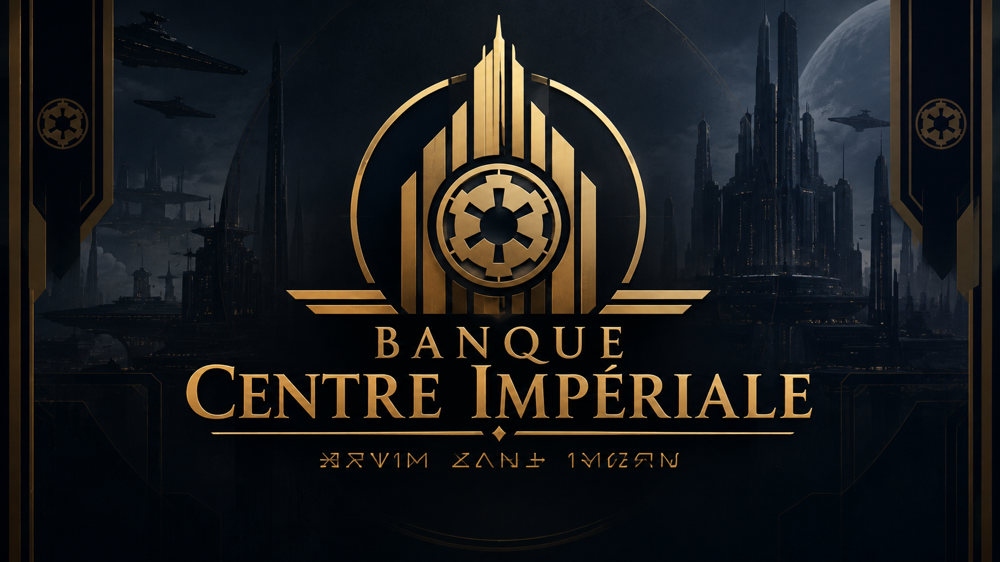
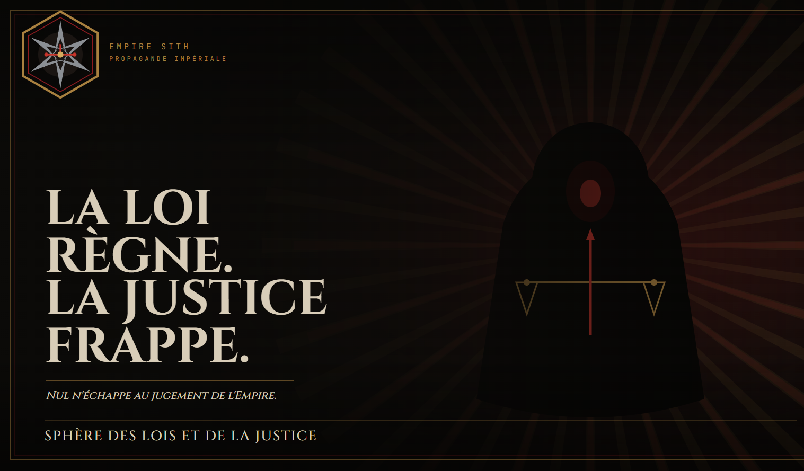
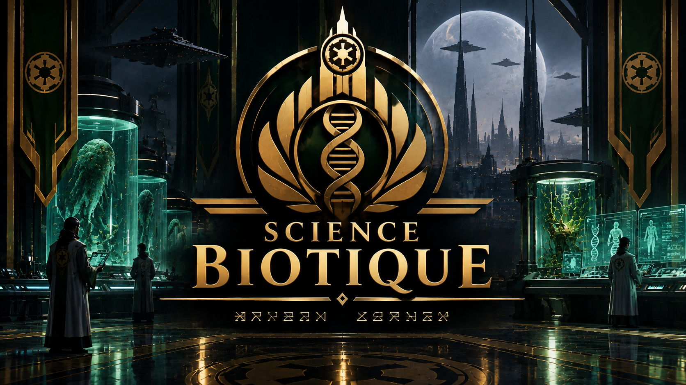
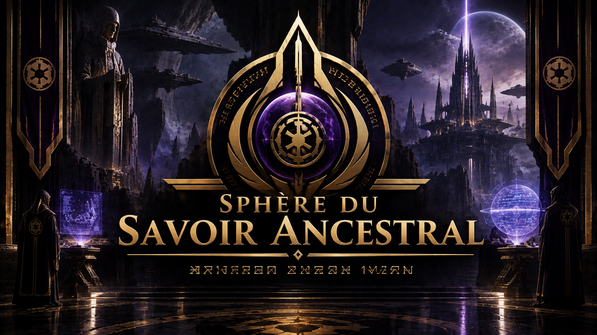

Les Départements, Ministères et Sphères représentent les différents domaines d'action de l'Empire Galactique. Chacun a un rôle précis dans le fonctionnement de l'État Impérial.

Que nul ne doute de la volonté de l'Empire de perdurer et de s'étendre, car seule la discipline absolue et le contrôle des ressources assurent la suprématie Sith. L'indiscipline des crédits, tout comme celle des esprits, conduit à la faiblesse. Par conséquent, il est décrété ce jour la création de la Banque Centrale Impériale (BCI).
Le Commandement Militaire assure la gestion et la coordination des forces armées de l'Empire.
Il organise les opérations offensives, la défense des territoires et la protection des installations impériales.
Il veille également au respect des lois militaires, à la discipline des soldats et au traitement des infractions.

La Sphère des Lois et de la Justice est responsable de tout les décrets et toutes les mises en places de lois dans l'Empire. La justice est également régis par cette dernière. Elle s'assure du bon fonctionnement interne de l'Empire et gère les litiges, la bonne application des lois et de la justice est sa priorité.
Au sein de l'Empire Sith, la diplomatie n'est pas une simple alternative à la guerre : elle est une arme à part entière. Elle incarne la stratégie, la domination subtile et la capacité à plier les volontés sans toujours recourir au sabre laser.

La sphère des Sciences biotiques est un domaine crucial au sein de l'Empire Sith, dédié à la recherche et à la maîtrise de la biologie et de la Force. Elle s'efforce de comprendre et d'exploiter les mécanismes biologiques pour servir les intérêts de l'Empire, en améliorant la santé, en créant des solutions biologiques innovantes et en renforçant l'efficacité impériale à travers la galaxie.
La Sphère de la Techno-Production constitue le cœur industriel et technologique de l'Empire. Elle veille à ce que la puissance des Sith ne soit jamais limitée par un manque de ressources, d'armement ou d'innovation. Ses membres œuvrent à la conception, l'amélioration et la production des équipements nécessaires à l'expansion impériale : armements, armures, technologies militaires, infrastructures et moyens de production. Mais la Techno-Production ne se contente pas de fabriquer. Elle innove, expérimente et perfectionne, transformant les ressources de l'Empire en instruments de domination.
Car la puissance ne réside pas seulement dans la Force : elle réside aussi dans les moyens de l'imposer.

La Sphère du Savoir Ancestral est chargée de rechercher, récupérer, préserver et étudier les connaissances, artefacts et vestiges anciens de l'Empire.
Elle mène des expéditions dans des zones interdites afin de retrouver des savoirs oubliés ou dangereux et de les conserver sous contrôle impérial.
Son objectif est de restaurer le savoir perdu et d'utiliser les découvertes anciennes pour renforcer la puissance et la suprématie des Sith.
La Sphère de la Philosophie Sith est la gardienne de la pensée, des traditions et des principes fondamentaux de l'Ordre Sith. Elle veille à la transmission du savoir Sith, à l'interprétation du Code et à la préservation des enseignements qui ont façonné l'Empire. Elle forme les générations futures, éprouve leur compréhension du côté obscur et s'assure que la puissance Sith ne soit jamais dissociée de la volonté, de la connaissance et de la domination.